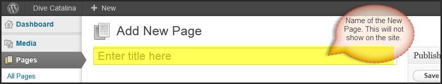
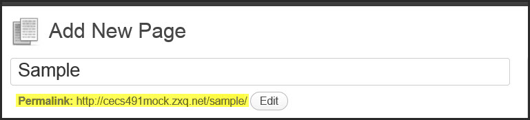
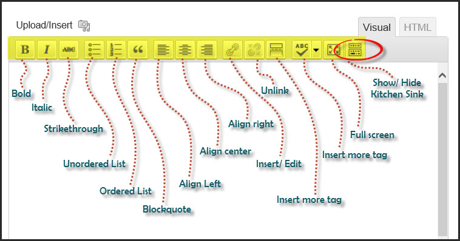
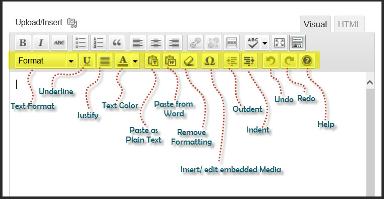

Copyright
The contents of this User Manual are subject to the Dive Catalina Website. This documentation is created by Spring 2012 CSULB Senior Project Team GREP. Users All Rights Reserved. All trademarks within this guide belong to Ron Moore.
Wordpress Admin Panel
User can use administration interface to modify content and set up stucture of the website.
Logging In
- In order to access the administration interface, user must log in first. User can access the log in screen, as shown in Figure 1, by using the address www.divecatalina.net/wp-admin. Then, user will be asked to enter the username and password.
- User must log off when done using the admin panel. It will stay logged in until user logs out.

- Figure 1. Log in screen
The Dashboard
- Once the user is logged in, Dashboard page appears as shown in Figure 2. This is the main administration homepage. At every top of the pages, name of the site is located in the header area which is also hyperlinked to site's homepage. On upper right corner, user can locate the name of the person who is currently logged in. User can find edit profile and log out link by putting a cursor on the name of the person [Figure 3].

- Figure 2. Main Admin Page

- Figure 3. Hovering over the name displays options to edit profile or log out.
Menu Options
- Along the left side of the Dashboard, user can locate main admin navigation menu as shown in Figure 4. Menu contains main options user can use to edit and confgiure the website.
 Figure 4. Media Fly Out Figure 4. Media Fly Out |
Menu has been adjusted to show only the options that are applicable to the user. Menu includes six options: Media, Pages, Appearance, Plugins, Users, and Settings.
When the user hovers over one of the main options, it displays 'fly out' menu for that specific main option. For instance, Figure 5 shows that hovering on Media displays two choices on its 'fly out' menu: Library and Add New. If the user clicks on the main menu, it will use the first option under fly out menu and direct to the page. |
Menu Option Usuages
Dashboard: Directs user back to Dashboard homepage. Media: Stores all images,documents, and files. User can browse through the Media library, and also edit,delete and update the files. Pages: Allows user to edit, delete, and maintain all web pages. User may also create new pages and add to the directory. Appear: Appearance: Allows user to regulate how site looks. User can manage the plugins, widgets, and menus. Plugins: Allows user to deactivate or activate plugins. Users: Lists all the active users on the site. Depending on the role, user is allowed to add or delete another user. Setting:
Working with Written Content
This section provides information on how to create and publish new pages, and also maintaing all pages.
Adding a Page
When the cursor is hovering on Pages under main menu, it displays 'fly out' menu with two options: All Pages and Add New. To create a page, user clicks on the Add New link and it will direct to 'Add New Page' Screen. Figure 5 shows the default 'Add New Page' screen.

- Figure 5. Add New Page
Enter Title
- This is where user can put the title of the new page. Once user puts a title in the entry field where it says 'Enter title here' and moves the cursor to the Text Editor, a new permalink is created for the page. Permalinks are permanent URL's to all pages. Permalinks can be edited by clicking on it.
- 
- Figure 6. Title of the page
- 
- Figure 7. Add New Page
Add Content
- User will use text editor to add page content. Text Editor contains text area for the content, two tabs to choose either Visual or HTML mode, and tool bar with function buttons. The following steps will show the user how to use text editor to successfully add page content.
- Tool Bar
- User can access all functions by using the Tool Bar located above the text box. By default, only top row of the Tool Bar is displayed. User can expand the Tool Bar by clicking on the Kitchen Sink button. Figure 7 and Figure 8 show the function of each button on the Tool Bar.
- 
- Figure 8. By default, only single row of tool bar is displayed.
- 
- Figure 9. Displayed buttons when Tool Bar is extended.
- Visual vs HTML Mode
- User can switch between Visual and HTML mode by clicking on the tabs on the right corner of the Text Editor's header bar. By default, it displays Visual mode meaning that the text is displayed in a WYSIWYG format just like word processor. User has an option to switch to HTML mode if he or she wants to use HTML code.


- There are two ways to display "List of Pages" page that the site contains. User can access it by clicking on Pages from main menu or All Pages from the Pages's 'fly out' menu. The "List of Pages" screen looks like in Figure 6. Information includes the page's title, author, and published date or last date modified.

- Figure 10. 'Fly Out' Menu for Pages


- Figure 11. List of Pages Screen
- On top of the page, user can see total of published pages and number of pages published or in drafts. Drafts are only visible under list of pages whereas published pages are active pages on the current website. User can also view the pages by the date they were published or modified using the filter option above. Bulk actions allow user to make changes to several pages at once. If user would like to make changes to some of the pages, user must select those pages by checking the checkboxes next to titles and click apply button. User can apply changes to all pages by checking the main checkbox which is the first checkbox on top.
Options for Page
- When hovering a cursor on one of the rows, it displays four links below the page title as shown in Figure 7. These are options that user can perform to make any necessary changes to the particular page. The options are Edit, Quick Edit, Trash, and View.

- Figure 7. Page editing options
Editing a Page
- Edit option allows user to edit a particular page. When user clicks on this Edit option below the title or clicks on the title of the page, it will display 'Edit Page' as shown in Figure 8.

- Figure 8. Edit page screen.
- User can use the content box to edit the contents of the page.